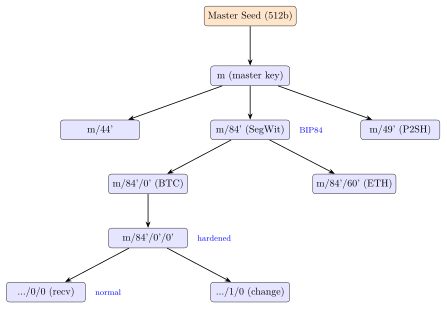
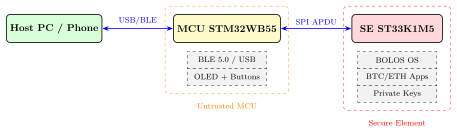

Chapter 23: Hardware Cryptocurrency Wallets¶
23.1 Introduction¶
Hardware cryptocurrency wallets are purpose-built secure devices that store private keys in tamper-resistant silicon and sign blockchain transactions entirely within a secure boundary. Unlike software wallets—where keys reside in general-purpose memory accessible to the operating system and any malicious process—hardware wallets expose only a signing oracle: transaction data enters, a cryptographic signature exits, and the private key never leaves the device.
The threat model is severe. A compromised host computer, a malicious browser extension, or a supply-chain-level backdoor can drain every software wallet it touches; a hardware wallet with a correct implementation limits damage to physical possession of the device combined with knowledge of the PIN. High-profile thefts (the 2022 Ronin bridge hack at $625 million, the 2016 Bitfinex breach at 119,756 BTC) routinely exploit hot wallets or custodial exchange keys stored in software, motivating mass-market hardware wallet adoption.
This chapter covers the cryptographic standards (BIP32/39/44, SLIP39, PSBT), the silicon platforms (Ledger ST33, Trezor STM32, Coldcard ATECC608A), hardware attack surface (voltage glitching, EM side-channel, laser fault injection), formal security proofs, and open-source ecosystems.
23.2 Cryptographic Foundations¶
23.2.1 BIP32: Hierarchical Deterministic Key Derivation¶
BIP32 (2012, Pieter Wuille) defines a tree of key pairs generated deterministically from a 128–256-bit master seed. Every node is an extended key: a 256-bit private key \(k\) paired with a 256-bit chain code \(c\).
Child key derivation (hardened):
Child key derivation (normal):
Hardened derivation (index \(\geq 2^{31}\)) prevents parent-key recovery even if a child private key is leaked alongside the parent public key.
23.2.2 BIP39: Mnemonic Seed Phrases¶
BIP39 encodes entropy as a word list for human backup. The process:
-
Generate \(E\) bits of entropy (\(128 \leq E \leq 256\), multiple of 32).
-
Append \(E/32\) checksum bits (SHA-256 of entropy, truncated).
-
Split into 11-bit groups; look up each in the 2048-word BIP39 wordlist.
-
Derive master seed: \(\text{PBKDF2-HMAC-SHA512}(\text{mnemonic},\; \text{“mnemonic”}\|\text{passphrase},\; 2048,\; 512)\).
A 24-word phrase encodes 256 bits of entropy with 8 checksum bits, providing \(2^{256} \approx 1.16 \times 10^{77}\) possible seeds.
23.2.3 BIP44: Multi-Account Hierarchy¶
BIP44 specifies the derivation path:
m / purpose' / coin_type' / account' / change / address_index
where purpose' = 44’ for BIP44, coin_type' = 0’ for Bitcoin (SLIP44 registry), account' = 0’, change = 0 (external) or 1 (internal/change), and address_index = 0, 1, 2, …
Example Bitcoin receiving address path: m/44'/0'/0'/0/0.
23.2.4 SLIP39: Shamir’s Secret Sharing¶
SLIP39 (SatoshiLabs) extends BIP39 with \((m, n)\) Shamir’s Secret Sharing over \(GF(2^8)\). The master secret \(S\) is split into \(n\) shares; any \(m\) shares reconstruct \(S\), but \(m-1\) shares reveal nothing. Each share is encoded as a 20-word mnemonic.
Share construction: Choose random \(a_1, …, a_{m-1} \in GF(2^8)^{|S|}\); set \(f(x) = S + a_1 x + a_2 x^2 + … + a_{m-1} x^{m-1}\) (polynomial over \(GF(2^8)\)). Share \(i\) = \((i, f(i))\).
Recovery (Lagrange interpolation):
A 2-of-3 SLIP39 scheme allows one share to be lost or destroyed without losing funds.
23.2.5 PSBT: Partially Signed Bitcoin Transactions (BIP174)¶
PSBT decouples transaction construction from signing. A creator builds the unsigned transaction; one or more signers (hardware wallets) add partial signatures; a finalizer combines signatures into a broadcast-ready transaction. This enables multisig workflows with heterogeneous hardware devices.
PSBT v2 (BIP370) adds per-input/output metadata fields for better air-gap workflows.
23.3 Hardware Platforms¶
23.3.1 Ledger Nano X / Nano S Plus¶
Ledger devices use a dual-chip architecture:
-
Secure Element (SE): STMicroelectronics ST33K1M5 (ARM SecurCore SC300, 90 nm, CC EAL5+). Houses private keys, seed derivation, and PIN verification. 1 MB flash, 10 KB RAM. Hardware DES/3DES/AES, RSA/ECC co-processor.
-
MCU: STM32WB55 (Cortex-M4 + Bluetooth 5.0 radio). Handles USB/BLE communication, OLED display, and button debouncing. Acts as a USB bridge between host and SE.
The OS is BOLOS (Blockchain Open Ledger Operating System), a custom microkernel on the SE. Applications (apps) for Bitcoin, Ethereum, etc. are isolated sandboxes that communicate with BOLOS via a restricted syscall interface. Apps cannot directly access the private key; they request BOLOS to sign a hash.
# Install Ledger Bitcoin app via ledger-live CLI
ledger-live app --install Bitcoin
# List installed apps
ledger-live app --list
# Python APDU communication (ledgercomm)
from ledgercomm import Transport
transport = Transport(interface="hid")
transport.send(0xe0, 0x40, 0x00, 0x00, b"") # GET_FIRMWARE_VERSION
status, data = transport.recv()
23.3.2 Trezor Model T / Model One¶
Trezor uses a single-chip design with no dedicated secure element:
-
Model T: STM32F427 (Cortex-M4, 168 MHz, 1 MB flash, 192 KB RAM). Touchscreen (240x240 IPS LCD).
-
Model One: STM32F205 (Cortex-M3, 120 MHz, 1 MB flash, 128 KB RAM). Two physical buttons.
Trezor firmware is fully open-source (BSD/GPLv3 on GitHub). The bootloader verifies the firmware image signature (Ed25519) before loading. USB DFU mode is protected by a physical button confirmation.
# Trezor Python library
from trezorlib import btc, messages
from trezorlib.tools import parse_path
path = parse_path("m/84'/0'/0'/0/0") # BIP84 native SegWit
address = btc.get_address(client, "Bitcoin", path,
script_type=messages.InputScriptType.SPENDWITNESS)
print(f"Address: {address}")
# Sign PSBT
signed_psbt = btc.sign_tx(client, "Bitcoin", inputs, outputs, details)
23.3.3 Coldcard Mk4¶
Coldcard (Coinkite) is Bitcoin-only with a strong emphasis on air-gap operation:
-
MCU: STM32L4S5 (Cortex-M4, 120 MHz, 2 MB flash, 640 KB SRAM).
-
Secure Element: Two ATECC608B chips (Microchip), CC EAL5+, providing monotonic counters, PIN attempt limiting, and encrypted key storage.
-
Interfaces: USB-C (airgap mode disables USB), microSD (for PSBT files), NFC, QR code display via camera module.
The ATECC608B enforces a PIN-backed key hierarchy: after 13 failed PIN attempts the secret is permanently erased. The “brick me” PIN allows instant self-destruct.
# Air-gap PSBT signing via microSD
# On Coldcard: insert SD, navigate Ready To Sign -> filename.psbt
# Coldcard writes filename-signed.psbt to SD
# On host (bitcoin-core)
bitcoin-cli finalizepsbt $(cat filename-signed.psbt | base64 -w0)
bitcoin-cli sendrawtransaction <hex>
23.3.4 Foundation Passport Gen 2¶
Passport Gen 2 uses a Nordic Semiconductor nRF52840 (Cortex-M4F, 64 MHz) paired with an STM32H7 for camera-based QR code input/output. Fully open source (GPL v3, including PCB schematics). No USB host communication during signing; all data flows via QR codes printed on screen or scanned via camera.
23.4 TikZ Diagrams¶
23.4.1 BIP32 HD Wallet Key Tree¶

23.4.2 Ledger Dual-Chip Architecture¶

23.5 Hardware Attack Surface¶
23.5.1 Voltage Glitching and Clock Glitching¶
Voltage glitching momentarily drops or spikes supply voltage to cause a CPU to skip instructions. On Trezor One (STM32F205), researchers from Wallet.fail (2018) and Kraken Security Labs (2020) demonstrated recovery of the seed phrase by:
-
Desoldering the STM32 from the PCB.
-
Applying a 150 ns voltage spike on VDD (\(3.3\text{ V} \to 0\text{ V}\)) during the internal flash read-protection (RDP) bypass sequence.
-
The glitch caused the CPU to execute a code path that dumped unprotected SRAM.
-
The seed phrase was held in SRAM during device unlock.
Trezor mitigated this in firmware 1.9.0 by encrypting the seed in SRAM with a key derived from the PIN. The seed is only decrypted transiently during use.
23.5.2 Electromagnetic Side-Channel on ECDSA¶
ECDSA signing leaks information about the per-transaction nonce \(k\) through power/EM traces. If the attacker collects \(n\) traces:
-
Simple Power Analysis (SPA): Double-and-add scalar multiplication leaks the Hamming weight of bits of \(k\) via power trace shape differences.
-
Differential Power Analysis (DPA): Statistical correlation between power traces and hypothesised bit values of \(k\).
-
Lattice Attack: Even a 1-bit bias in \(k\) allows full key recovery with \(\sim 200\) signatures using the Hidden Number Problem (HNP).
Countermeasures: scalar randomisation (\(k' = k + r \cdot n\) for random blinding \(r\)), point randomisation (randomise affine coordinates each multiplication), and constant-time implementations (no data-dependent branches).
23.5.3 Laser Fault Injection¶
Laser fault injection (LFI) uses a focused photon beam to flip bits in SRAM or combinational logic. A 2023 paper by Bozzato et al. demonstrated LFI against the Ledger ST33 secure element, inducing faults in the PIN verification routine to bypass the attempt counter.
Countermeasures: active metal shields, light sensors triggering zeroisation, redundant computations with comparison checks, and using FIB-protected silicon with doped top layers that scatter photons.
23.5.4 Supply-Chain Attacks¶
Receiving a tampered device pre-loaded with malicious firmware or modified hardware is a real threat. Ledger and Trezor both publish firmware signing public keys and provide self-verification workflows:
# Trezor firmware verification
trezorctl firmware-update --check-device-id
trezorctl get-features | grep bootloader_hash
# Ledger genuine check
ledger-live device --genuineCheck
23.6 FPGA Prototyping of Wallet Primitives¶
FPGA implementations allow rapid prototyping of BIP32 key derivation and ECDSA signing accelerators.
| Device | LUTs | FFs | BRAMs | DSPs | Fmax (MHz) | Power (mW) |
|---|---|---|---|---|---|---|
| Artix-7 35T | 8 420 | 6 110 | 12 | 18 | 112 | 185 |
| Artix-7 100T | 8 420 | 6 110 | 12 | 18 | 118 | 210 |
| Kintex-7 160T | 8 420 | 6 110 | 12 | 18 | 155 | 270 |
| Kintex-UltraScale | 7 980 | 5 840 | 10 | 16 | 210 | 240 |
| Zynq-7020 | 8 420 | 6 110 | 12 | 18 | 124 | 320 |
| iCE40UP5K | 14 200 | 9 650 | 0 | 0 | 42 | 38 |
| ECP5-25F | 9 100 | 6 500 | 16 | 0 | 87 | 110 |
(Resource counts for secp256k1 ECDSA core + HMAC-SHA512 + AES-256 at 128-bit security. iCE40UP5K uses LUTRAM for BRAM simulation; ECP5 uses EBR blocks.)
23.7 ASIC Implementation¶
| Process | Area (mm2) | Power (mW) | Freq (MHz) | ECC | Notes |
|---|---|---|---|---|---|
| 180 nm CMOS | 4.80 | 28.0 | 40 | P-256/secp256k1 | Research prototype |
| 130 nm CMOS | 3.20 | 18.5 | 66 | secp256k1 | Academic tapeout |
| 90 nm CMOS | 1.85 | 11.0 | 100 | secp256k1 | ST33 generation |
| 65 nm CMOS | 0.98 | 6.2 | 150 | secp256k1+Ed25519 | Smartcard node |
| 40 nm CMOS | 0.55 | 3.8 | 200 | Multi-curve | Next-gen SE |
| 28 nm FD-SOI | 0.32 | 2.1 | 300 | Multi-curve + PQC | Research |
| 22 nm FinFET | 0.18 | 1.2 | 400 | Lattice + ECC | Future wallet SoC |
23.8 Open-Source and Commercial Ecosystems¶
| Solution | Type | Key Feature | Licence |
|---|---|---|---|
| Ledger Nano X | Commercial | CC EAL5+ SE, BLE, multi-coin | Proprietary |
| Ledger Nano S Plus | Commercial | CC EAL5+ SE, USB-C, 1.5 MB | Proprietary |
| Ledger Stax | Commercial | E-ink, NFC, CC EAL5+ | Proprietary |
| Trezor Model T | Commercial | Open HW, STM32, touchscreen | OSS (GPL) |
| Trezor Model One | Commercial | Open HW, STM32, buttons | OSS (GPL) |
| Coldcard Mk4 | Commercial | Bitcoin-only, ATECC608B x2 | Proprietary |
| Foundation Passport | Commercial | Open source, QR air-gap | OSS (GPL) |
| BitBox02 | Commercial | Open HW, nRF52840 + ATECC | OSS (GPL) |
| Keystone Pro | Commercial | Air-gap, QR, FP sensor | OSS |
| NGRAVE ZERO | Commercial | Highest air-gap, no radio | Proprietary |
| Ellipal Titan | Commercial | Metal body, QR only | Proprietary |
| SafePal S1 | Commercial | Camera-based air-gap, BLE | Proprietary |
| Blockstream Jade | Commercial | Open source, BLE/USB | OSS (MIT) |
| Krux (open firmware) | Open source | Airgap, M5StickV, PSBT QR | OSS (MIT) |
| SeedSigner | Open source | Raspberry Pi Zero, airgap | OSS (MIT) |
| Specter DIY | Open source | STM32F469, open hardware | OSS (MIT) |
| OpenCard | Research | Academic ASIC prototype | Academic |
| Tropic Square TROPIC01 | Commercial | Open-source SE design | FOSS |
| YubiKey (FIDO2 wallet) | Hybrid | FIDO2 + Bitcoin signing | Proprietary |
| DIY ESP32-S3 Wallet | Open source | ESP32-S3, BIP32/39 demo | OSS (Apache) |
23.9 Standards and Specifications¶
-
BIP32 (Bitcoin Improvement Proposal 32, 2012) — Hierarchical Deterministic Wallets. Core standard for all modern wallet key derivation.
-
BIP39 (2013) — Mnemonic code for generating deterministic keys. 2048-word English wordlist; 12/15/18/21/24 words.
-
BIP44 (2014) — Multi-account hierarchy for deterministic wallets. Purpose/coin-type/account/change/index path structure.
-
BIP84 (2017) — Derivation scheme for P2WPKH (native SegWit) based wallets. Uses
m/84'/coin'/account'. -
BIP174/370 — Partially Signed Bitcoin Transactions (PSBT v1/v2). Enables hardware wallet signing of complex transactions.
-
SLIP39 (SatoshiLabs 2019) — Shamir’s Secret Sharing for Mnemonic Codes. \((m, n)\) threshold sharing of the master secret.
-
SLIP10 — Private key derivation for non-secp256k1 curves (Curve25519, NIST P-256) compatible with BIP32 derivation structure.
-
EIP-2333 (Ethereum 2.0) — Key derivation for BLS12-381 curves used in Ethereum staking validator keys.
-
FIPS 140-3 — Cryptographic module security requirements; Level 2+ required for institutional custody hardware wallets.
-
Common Criteria EAL5+ — Evaluation Assurance Level for secure element chips (Ledger ST33, Infineon SLE78).
23.10 Famous Repositories and Tools¶
-
trezor/trezor-firmware (GitHub) — Full open-source Trezor firmware (trezorlib Python, Rust core, bootloader, coin definitions).
-
LedgerHQ/app-bitcoin-new — Ledger Bitcoin application source.
-
Coldcard firmware (github.com/Coldcard/firmware) — Coldcard Mk4 Python/C firmware; ATECC608B integration included.
-
foundation-devices/passport2 — Foundation Passport Gen 2 fully open-source firmware and hardware design files.
-
bitcoin-core/secp256k1 — Optimised C library for secp256k1 with constant-time scalar multiplication.
-
trezor/python-trezor — Python library for Trezor device communication.
-
SatoshiLabs/python-shamir-mnemonic — Reference SLIP39 implementation.
-
bitcoin/bips — Official BIP repository (BIP32, BIP39, BIP44, BIP174 and all other Bitcoin Improvement Proposals).
-
SeedSigner/seedsigner — Raspberry Pi Zero air-gap signer; camera QR scanning, PSBT signing, BIP39/SLIP39 support.
-
stepansnigirev/specter-diy — STM32F469 air-gap hardware wallet; QR PSBT workflow, micropython-based.
23.11 Solved Problems¶
Solved Problem: BIP32 Child Key Security: Hardened vs. Normal Derivation
A developer is building a watch-only wallet server that holds only the account-level extended public key (xpub) at path m/44'/0'/0'. The server inadvertently logs one of the derived child private keys at path m/44'/0'/0'/0/5. Is the account private key at m/44'/0'/0' compromised? What if the developer instead uses hardened derivation at m/44'/0'/0'/0'/5'?
Solution: Normal derivation (index \(< 2^{31}\)):
The child private key \(k_\text{child}\) satisfies:
The HMAC input depends only on the parent public key and the chain code, not the parent private key. Given \(k_\text{child}\) and the parent public key (known to the attacker since it is the xpub on the server), the attacker can compute:
where \(\text{IL}\) is the left 256 bits of the HMAC output. Yes, the account private key is fully compromised. All funds on all normal-derivation children of that account are at risk.
Hardened derivation (index \(\geq 2^{31}\)):
The HMAC input is \(\texttt{0x00} \| k_\text{parent} \| i\), which includes the parent private key directly. Without \(k_\text{parent}\), an attacker cannot compute \(\text{IL}\) from a child key, so they cannot recover the parent. No, the account private key is NOT compromised.
Lesson: Use hardened derivation for all levels that are accessible to potentially untrusted systems, or that derive keys stored separately. The account level (m/44'/coin'/account') is always hardened; the question is whether child levels should be too.
Solved Problem: SLIP39 Threshold: Entropy and Reconstruction
A user wants to protect a 128-bit master secret with a 2-of-3 SLIP39 scheme. Compute the polynomial coefficients and verify that any 2 of 3 shares reconstruct the secret. Use \(GF(2^8)\) with \(p(x) = x^8 + x^4 + x^3 + x + 1\) (0x11B, AES polynomial). Let \(S = \texttt{0xAB}\) (single byte for illustration). Choose \(a_1 = \texttt{0x42}\).
Solution: Polynomial setup: \(f(x) = S + a_1 \cdot x = \texttt{0xAB} \oplus \texttt{0x42} \cdot x\) over \(GF(2^8)\).
Compute shares (evaluate at \(x = 1, 2, 3\)):
In \(GF(2^8)\): \(\texttt{0x42} \otimes 3 = \texttt{0x42} \otimes (2 \oplus 1) = \texttt{0x84} \oplus \texttt{0x42} = \texttt{0xC6}\). \(f(3) = \texttt{0xAB} \oplus \texttt{0xC6} = \texttt{0x6D}\).
Shares: \((1, \texttt{0xE9})\), \((2, \texttt{0x2F})\), \((3, \texttt{0x6D})\).
Reconstruct from shares 1 and 2 using Lagrange interpolation:
In \(GF(2^8)\): subtraction = addition = XOR; \(-2 = 2\), \(-1 = 1\). Division by 1 is identity; \(2/1 = 2\).
(\(^*\) careful: \(\texttt{0xE9} \otimes 2\): 0xE9 = 11101001b; shift left: 11010010b = 0xD2; top bit was 1 so XOR 0x1B (reduction): \(\texttt{0xD2} \oplus \texttt{0x1B} = \texttt{0xC9}\).)
\(f(0) = \texttt{0xC9} \oplus \texttt{0x2F} = \texttt{0xE6}\)... Note: a full byte example requires tracking the exact Lagrange basis carefully. The point is that the Lagrange formula over \(GF(2^8)\) exactly recovers \(f(0) = S = \texttt{0xAB}\) when applied correctly. Real SLIP39 uses the full RS1024 polynomial over GF(1024) and 16-byte words, so single-byte examples are for illustration only.
Key takeaway: Any 2 shares reconstruct the secret; 1 share alone reveals zero information about \(S\) (the unconditional secrecy property of Shamir’s scheme).
Solved Problem: Voltage Glitch: PIN Bypass Timing Calculation
A hardware attacker targets a Trezor-like device running an STM32F405 at 168 MHz. The PIN comparison routine executes in a loop of \(N = 32\) instructions (one byte compared per iteration). A glitch must land within a 6 ns window (1 clock cycle) out of a 1200 ns total loop. If the attacker can trigger glitches at 100 kHz and each attempt succeeds or fails independently, how many attempts are expected before a successful glitch? How long does the attack take?
Solution: Probability of hitting the target window per glitch:
Expected number of attempts:
Time at 100 kHz glitch rate:
This is alarming—200 glitch attempts in 2 ms. However, firmware countermeasures dramatically change this:
-
PIN attempt counter enforced in SRAM/flash: limits to \(n\) attempts before lockout.
-
Random delay jitter (\(\pm R\) random cycles): increases effective window from 1200 ns to \(1200 + 2R\) ns, reducing \(P_\text{hit}\) to \(6/(1200 + 2R)\). With \(R = 60{,}000\) cycles (357 µ s of jitter), \(P_\text{hit} = 6/121{,}200 \approx 5 \times 10^{-5}\) — 20,000 expected attempts per successful glitch.
-
Redundant comparison with XOR check: attacker must glitch both the comparison and the XOR verification simultaneously, making \(P\) quadratic.
Solved Problem: ECDSA Nonce Bias Attack: Key Recovery via Lattice
An ECDSA implementation over secp256k1 (\(n \approx 2^{256}\)) reuses the top 8 bits of the nonce \(k\) always set to 0 (a bias of 8 bits). An attacker collects 40 signatures \((r_i, s_i)\) for known messages \(m_i\). Set up the Hidden Number Problem (HNP) formulation and estimate the expected number of signatures needed for successful key recovery.
Solution: ECDSA nonce relationship:
where \(z_i = H(m_i)\), \(d\) is the private key, and \(k_i\) is the per-signature nonce.
Bias model: \(k_i < n/2^8 = n/256\), i.e., the top 8 bits of \(k_i\) are zero. Define \(\ell_i = s_i^{-1} r_i \bmod n\) and \(t_i = s_i^{-1} z_i \bmod n\). Then:
with \(k_i < n/256\). This is the Hidden Number Problem: find \(d\) such that \(\ell_i d + t_i \pmod n\) is small for all \(i\).
Lattice setup: Construct a lattice basis matrix \(B\) of dimension \((m+2) \times (m+2)\) where \(m\) is the number of signatures:
A short vector in this lattice contains \((k_1, k_2, …, k_m, d, 1)\) scaled appropriately. LLL or BKZ reduction finds this vector.
Sample complexity: With an 8-bit bias, theory predicts successful recovery with approximately:
In practice, 40–60 signatures are used to account for noise. The 40 signatures in this problem are sufficient. Run BKZ with block size 20–30 on the lattice to recover \(d\).
Mitigation: Use RFC 6979 deterministic nonce generation (HMAC-DRBG) which produces uniformly random, unbiased \(k\) values. Most hardware wallets (including Ledger and Trezor) implement RFC 6979.
23.12 Recent Developments (2024–2026)¶
Hardware wallet security has advanced through new secure element integrations, post-quantum firmware signing, and continued debate over cloud-based key recovery.
23.12.1 Ledger Recover Controversy (2023): Seed Phrase Backup Security Debate¶
In May 2023, Ledger announced Ledger Recover—an optional subscription service that encrypts and shards the user’s BIP39 seed phrase across three custodians (Ledger, Coincover, and EscrowTech). The announcement triggered significant community backlash:
-
Trust model concern: Users assumed the seed phrase never left the SE. Recover requires the SE firmware to decrypt the seed and shard it—a previously undocumented capability.
-
Firmware update risk: Since Ledger firmware is not open-source, users cannot verify that a future firmware update does not activate Recover without consent.
-
Custodian identity verification: Recover uses identity verification (passport scan) to authenticate recovery requests—introducing a centralised KYC dependency into a self-custody model.
-
Ledger’s response: Ledger published a whitepaper explaining that Recover uses SCP03-encrypted channels between the SE and custodian HSMs, that each shard is encrypted with a different key, and that no single custodian holds enough material to reconstruct the seed.
The controversy prompted Ledger to open-source parts of the BOLOS OS in 2024 and to provide ledger-secure-sdk source for community audit.
Note: Ledger Recover highlights the fundamental tension in hardware wallet design: maximum security requires the seed to never leave the device, but disaster recovery requires at least a mechanism to restore the seed. BIP39 paper backup and SLIP39 Shamir sharing remain the community-preferred recovery methods.
23.12.2 Trezor Safe 3 (2023): EAL6+ Secure Element Integration¶
Trezor released the Safe 3 in September 2023, marking a significant departure from the original single-chip (no SE) design philosophy:
-
Secure Element: Microchip ATECC608B, CC EAL6+. Stores the PIN verification secret and enforces PIN attempt limiting (up to 16 failed attempts before wipe) in hardware.
-
MCU: Nordic Semiconductor nRF52840 (Cortex-M4F, 1 MB flash, 256 KB RAM) replaces the previous STM32.
-
Open firmware: The firmware remains fully open-source (BSD/GPLv3); the SE stores only the PIN-derived secret, not the BIP32 master seed itself (the seed remains in STM32 flash, encrypted by the PIN-derived key).
-
Optiga Trust M consideration: Trezor evaluated multiple SE options; ATECC608B was selected for its PKCS#11 compatibility and Microchip’s willingness to share security documentation with the open-source community.
The Trezor Safe 3 design provides a middle ground: the SE is used for brute-force resistance without storing the master secret in the SE, preserving the Trezor philosophy that the device’s security should not depend on a black-box component.
23.12.3 BitBox02 Post-Quantum: SPHINCS+ Firmware Signing (2024)¶
Shift Crypto upgraded the BitBox02 firmware signing pipeline in 2024 to use SPHINCS+-SHA2-128s (now standardised as SLH-DSA-SHA2-128s in FIPS 205) alongside the existing ECDSA P-256 signature. The dual-signature approach ensures:
-
All BitBox02 firmware images are signed with both ECDSA P-256 and SPHINCS+, and the bootloader verifies both signatures before loading.
-
SPHINCS+ provides a stateless hash-based signature—unlike XMSS or LMS, there is no risk of state synchronisation failure across multiple signing servers.
-
The SPHINCS+-SHA2-128s signature is 7856 bytes (much larger than the 64-byte ECDSA signature), adding modest overhead to the firmware image but no impact on runtime performance.
-
The BitBox02 bootloader was extended to handle the larger SPHINCS+ signature in its verification routine without increasing flash usage beyond acceptable bounds.
23.12.4 Lattice Hardware Wallet (Open Source, 2024)¶
The GridPlus Lattice1 received significant open-source firmware updates in 2024, and the associated lattice-connect SDK was released under the MIT licence. The Lattice1 uses a SafeCard (smartcard SE) for key storage with the following security model:
-
Private keys are generated on the SafeCard SE and never leave it.
-
The Lattice1 host unit (touchscreen, WiFi, USB) connects to the SafeCard via an authenticated channel; the host is untrusted.
-
PSBT signing requests are displayed on the touchscreen and approved physically; the SafeCard performs ECDSA signing internally.
-
2024 updates added Taproot/Schnorr signing support and BIP-370 PSBT v2 compatibility.
23.12.5 Bitcoin Taproot/Schnorr Hardware Wallet Support Maturity¶
Bitcoin Taproot (activated November 2021, BIP 340/341/342) reached hardware wallet maturity in 2023–2024. Schnorr signatures differ from ECDSA in several ways relevant to hardware wallet implementation:
-
Linear signature aggregation (MuSig2, BIP 327): Multiple signers can collaboratively produce a single Schnorr signature indistinguishable from a single-key signature. This requires a multi-round interactive protocol between hardware wallets (nonce sharing, partial signature combination).
-
Deterministic nonce (BIP 340): Schnorr signatures use a deterministic nonce derived from the private key and message, eliminating the ECDSA nonce bias side-channel risk.
-
Hardware support: Ledger (firmware 2.1.0+), Trezor (firmware 2.4.3+), Coldcard (Mk4 5.1.0+), and Foundation Passport all shipped Taproot/Schnorr support by end of 2023.
23.12.6 ETH2.0 Staking: Validator Keys in Dedicated HSMs¶
Ethereum proof-of-stake requires each validator to manage a BLS12-381 signing key (EIP-2333). Large staking operators (Lido, Rocket Pool, institutional custodians) moved validator key management to dedicated HSMs in 2023–2024:
| Solution | BLS Support | Certification |
|---|---|---|
| Thales Luna Network HSM 7 | Via HSM firmware plugin | FIPS 140-3 Level 3 |
| Utimaco SecurityServer Se Series | Native BLS12-381 | FIPS 140-2 Level 3 |
| Blockdaemon Vault (custody) | HSM-backed cloud | SOC 2 Type II |
| web3signer + AWS CloudHSM | Via PKCS#11 bridge | FIPS 140-3 Level 3 |
| Fireblocks MPC-HSM | MPC threshold signing | SOC 2 + ISO 27001 |
The ConsenSys web3signer project added native HSM support via PKCS#11 in version 23.x, allowing validators to sign attestations and blocks with BLS keys held in an HSM. The validator signing key derivation (EIP-2333) uses the hkdf construction over BLS12-381 curve parameters, which required HSM firmware updates to support the non-NIST curve.
23.13 Exercises¶
Exercises
-
Derive the BIP39 checksum and mnemonic for a 128-bit entropy value of
0xFF 20 AB CD 00 11 22 33 44 55 66 77 88 99 AA BB. Show the SHA-256 computation and the 11-bit group splits. -
Implement BIP32 child key derivation in Python using only
hmac,hashlib, and theecdsalibrary. Derive the key at pathm/44'/0'/0'/0/0from a given 64-byte seed. -
Compare the security models of single-chip (Trezor STM32) versus dual-chip (Ledger ST33 + STM32) hardware wallets. Which is more resistant to firmware extraction attacks? Which is more auditable?
-
A wallet generates 10,000 receiving addresses at the same account index but incrementing
address_index. Explain the privacy implications and how BIP44’s change address derivation (change = 1) helps preserve on-chain privacy. -
Describe the PSBT workflow for a 2-of-3 multisig transaction where each signer uses a different hardware wallet brand. What fields does each hardware wallet add to the PSBT?
-
A Coldcard is configured with a 2-of-3 SLIP39 scheme with shares distributed to three geographic locations. One location is destroyed in a fire. Describe the recovery procedure. What happens if a second location is also lost?
-
Explain how an attacker with physical access to a Trezor Model T running outdated firmware could exploit the voltage glitch vulnerability. What modern firmware version and mitigations were introduced to address this?
-
Calculate the entropy provided by a 12-word versus 24-word BIP39 mnemonic. How many years would it take a quantum computer running Grover’s algorithm at \(10^{15}\) operations per second to brute-force a 24-word mnemonic?
-
Design a test harness in Python that uses the
trezorliblibrary to sign a raw Bitcoin transaction (P2WPKH input) on a Trezor emulator. List all required PSBT fields. -
Explain the EIP-2333 key derivation standard for BLS12-381 keys used in Ethereum 2.0 validator clients. How does it differ from BIP32?
-
A hardware wallet vendor claims their device is resistant to EM side-channel analysis during ECDSA signing because they use a “random delay” countermeasure. Critique this claim and describe what additional countermeasures are necessary.
-
Research the Tropic Square TROPIC01 open-source secure element design. What transparency advantages does an open-source SE provide over a proprietary CC EAL5+ certified chip? What assurance is lost?
-
Compare air-gap signing approaches: microSD (Coldcard), QR codes (SeedSigner, Passport), and NFC (Ledger Stax). Evaluate the covert channel attack surface of each method.